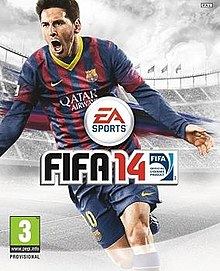
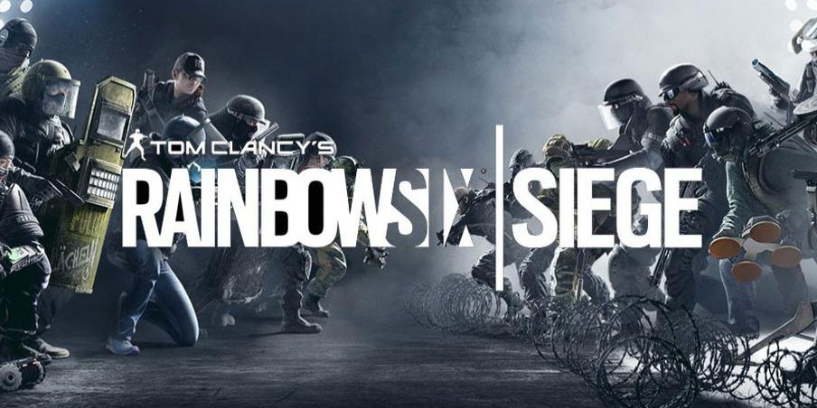

UI/Gameplay Developer

Senior Engine/Tools Developer

Lead Developer/PMM
Tools Examples
- Particle Editor
- World Editor
- Game Object Editor
- Game Object Validator
- Sound Editor
- ... other editors
- And Patch Note Generator
What is a Tools Engineer?
What is a Tools Engineer?
- Analyze workflow
- Improve efficiency
- Monitor changes
- Share knowledge
- Help fellow game developers
How would you get yourself into that?
- Masters in Computer Science
- 6 months volunteer work for medical lab
- 6 more months half time
- 1 year at military facility
- 1 year outsource for Intel
- Google Summer of Code (for bonus points)
Fake it till you make it
No, for real, how would you get yourself into that?
Choose your starter
- Content Editing Workflow
- Content Build Pipeline
- Reliability & Infrastructure
Content Editing Workflow
- User experience improvement
- User interface toolkits
- Document formats
- Revision control integration
- File system journaling
- Interprocess communication
Content Build Pipeline
- Build systems
- Dependency analysis
- Pipeline auditing
- Parallelism and concurrency
- Global optimization
- Determinism
Reliability & Infrastructure
- Continuous Integration
- Continuous Validation
- Computer Configuration-As-Code
- Telemetry Systems
- Data health monitoring
Choose your starter
- Content Editing Workflow
- Content Build Pipeline
- Reliability & Infrastructure
UX is KING
Maslow Pyramide for Tools
UX where to start
- Perceived Performance
- Designing the User Experience of Game Development Tools